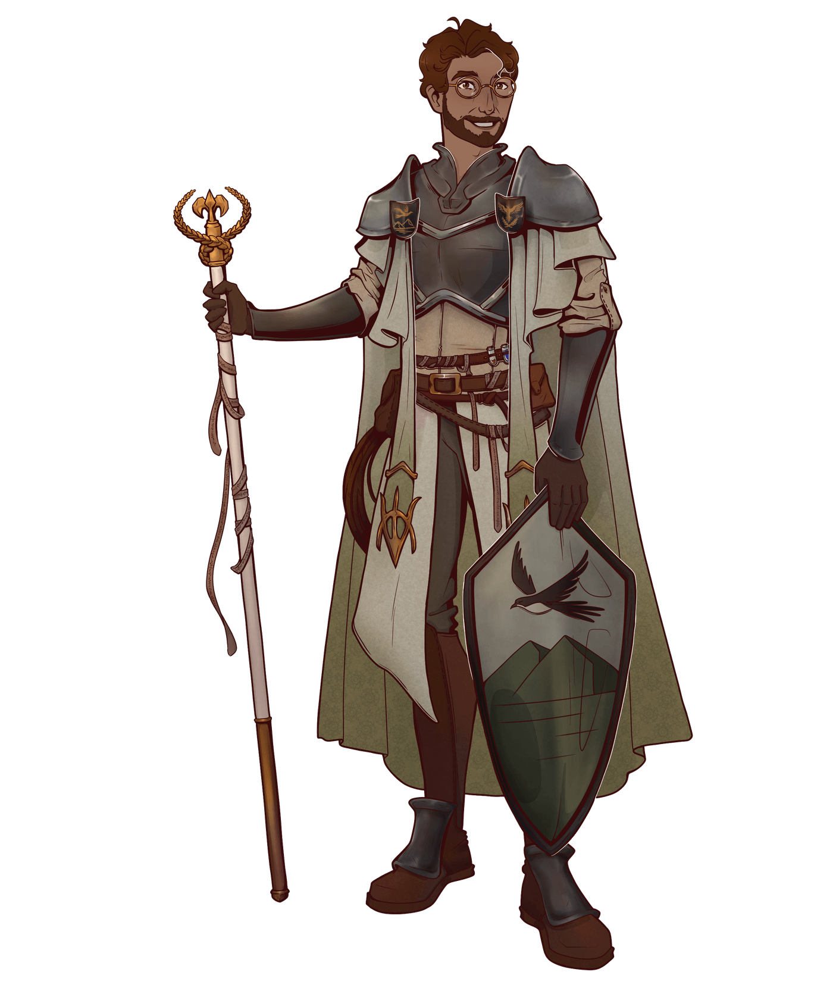

Edwinn Falkrest
The Prince of the Pauper
His armor gleams in the morning sun as he kneels to offer a silent prayer, the faint smell of incense clinging to polished steel. Edwinn's life is a testament to service: a devoted cleric forever torn between his duties at home and his calling abroad. Born the first son of King Talon, yet of lowborn lineage, he wears his faith like a shield—protecting both the meek who adore him and the kingdom that questions him.
A Beacon of Hope
Edwinn's healing touch and gentle smile have earned him the unshakable loyalty of the common folk. Wherever he travels, rumors spread of a humble prince who prays before battle, who feeds the hungry, and who bandages the wounds of friend and stranger alike. Father Aldren Stillwater, his spiritual mentor, hails him as a future luminary of the Church. Even in distant lands, figures like Hrogar Grimhowl admire Edwinn's selflessness, forging bonds that stretch across borders.
Shadows of Doubt
But not everyone celebrates the prodigal son. The nobility whisper that Edwinn dodges his "true" responsibilities—healing peasants instead of securing political alliances at court. His prolonged absences fuel suspicions that he shirks royal duty in favor of personal glory. Some even dismiss him as a dreamer who values sermons over statecraft, quietly hoping his soft heart will fail him when the realm needs a steel spine.
Family Ties and Tensions
Ask his siblings what they think, and the answers range from warm embraces to rueful jabs. Edwinn's compassionate soul touches Via, who looks forward to his returned gifts and travels, while Xanthe's fierce discipline clashes with his gentle ways. Cailynn still carries fond memories of birthdays only he attended, and Marik welcomes each homecoming with a new round of truffle-hunting adventures. Yet all of them feel the gap left by his recurring departures—a closeness tinged by the ache of his absence.
Standing at the crossroads of humble faith and royal expectation, Edwinn Falkrest embodies a devotion that neither crown nor church can wholly command. Loved by many, doubted by some, and bound by duty to wander—his story stirs both hearts and suspicions across Ederia's Crimson Court.